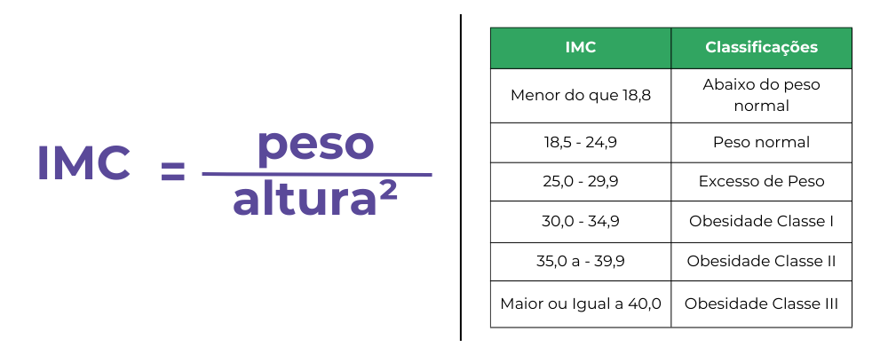

IMC: o que é, e como se calcula.
O Índice de Massa Corporal (IMC) é uma das principais ferramentas, adotada inclusive pela Organização Mundial de Saúde (OMS), para calcular o chamado “peso ideal”. Obtido a partir do peso e da altura do indivíduo, o IMC também aponta níveis de magreza e obesidade, que são usados para nortear o trabalho de profissionais de saúde e de educadores físicos. Para obter o IMC, basta dividir o seu peso (em quilos) pela altura (em metros) elevada ao quadrado (altura x altura). De acordo com o indicador, o peso considerado saudável é aquele situado entre 18,5 e 24,9. Os outros marcadores do IMC são: - magreza grave (menor que 16); - abaixo do peso (entre 17 e 18,4); - sobrepeso (índice de 25 a 29,9); - obesidade grau I (30 a 34,9); - obesidade grau II (35 a 39,9) - obesidade grau III (acima de 40).
